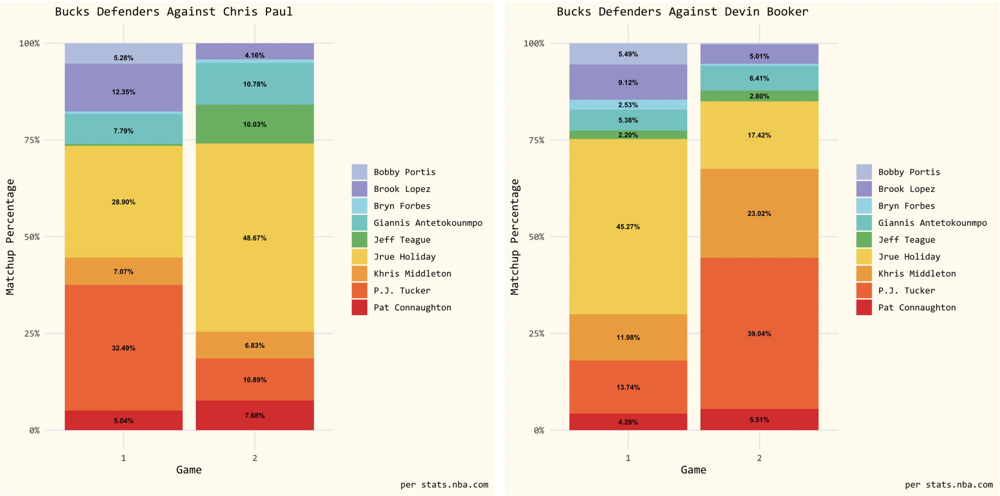

July 9, 2021 at 1:42 PM PT
The first two games of the 2021 NBA Finals have seen Milwaukee trying many different methods of defending Phoenix’s pick and roll sets, both personnel-wise and scheme-wise. Below are the slews of different defenders that the Bucks have used against the Sun’s two primary playmakers, Chris Paul and Devin Booker.
I did not realize Seth Partnow had written an article and already made a defender distribution chart from Game 1 until I had already made my own chart so I’ll post it here anyway. I want to focus on how Milwaukee went about defending Chris Paul in high ball screen situations. Game 1 featured a lot of switching from the Milwaukee defense. PJ Tucker got the first crack at Paul, to limit the advantage Deandre Ayton would have over whoever switched off of Paul. This resulted in Paul pulling it back out often and taking Brook Lopez, Ayton’s man, out into space.
A small note: a lot of crucial aspects of the Bucks' defensive decision making are cut out of the result-based clips accessible via the NBA's video API, so I gathered the full play clips instead.
Game 1
Phoenix’s strong floor spacing made it difficult for other Milwaukee defenders to help Lopez out on these isolations, leaving Brook stranded on Chris Paul Island. Even though Lopez’s size allowed him to get average contests on some of these shots, Paul can convert difficult midranges with the best of them. And when the Bucks did bring help over to Paul, it often lead to open catch and shoot threes for the other Suns, thus creating a tough pick your poison scenario at the clip that Paul was shooting from midrange.
Milwaukee adjusted and started putting Lopez in a drop coverage with Tucker fighting over the top of these ball screens. Unfortunately for the Bucks, drop coverage is where Paul and his snake dribble movement can thrive. Here Paul essentially runs away from the pursuing Tucker towards the sideline, to get to his spot. Certain adjustments can be made to prevent Paul from generating a paint touch so easily, but this also may be a shot that Milwaukee will live with.
Bucks head coach Mike Budenholzer subbed out Lopez after these repeat sequences in favor of backup big Bobby Portis, a more viable perimeter defender, at the 5 spot and went back to their switching scheme, in hopes of slowing down Paul with a slightly more agile big man. Despite Portis' lateral quickness advantage over Lopez, Paul possesses a massive quickness advantage himself over Portis. The degree to which Paul blew by Portis, combined with the reluctance of Milwaukee's help defenders to leave Phoenix's outside shooters, resulted in one of Paul's easier field goals of the night.
With neither Portis or Lopez being able to stay on the floor defensively, coach Budenholzer eventually downsized and put the ever-versatile Giannis Antetokounmpo at the center spot. Paul countered by hunting out the next weak link in Pat Connaughton in high ball screens, and the Suns pulled out Game 1 behind Paul’s 32 points on 12-19 shooting from the field. Going into the second game, adjusting the ball screen gameplan against Paul was crucial if Milwaukee were to slow down Phoenix's offensive attack.
Game 2
Game 2 saw the Bucks flipping back to fighting over the top of these high ball screens and keeping Lopez in drop coverage. However, Jrue Holiday was now the primary defender, guarding Paul for about 20% more of the time than he did in Game 1, being credited as the primary defender of Paul for almost half of Paul's Game 2 minutes. Holiday fared well early, as he forced a pair of CP3 turnovers and strategically funneled Paul into a crowd where Antetokounmpo could pull off a rearview block.
With Lopez being in a drop still, the Bucks were switching 1-4. Suns head coach Monty Williams adjusted for this by getting Holiday off Paul by having a wing set a screen for CP3, before returning to their bread and butter of attacking Lopez. To Milwaukee’s credit, the adjustment of having a defender at the nail (Holiday on this play) when Paul comes off the screen influenced the quick pass out to the lifting Bridges, who makes a tough fallaway here that MIL has to live with, especially after Khris Middleton whiffed on jumping the passing lane.
Jeff Teague getting a 10% matchup share against Paul in Game 2 was a head scratcher on the surface, as the 33 year-old Teague lacks the speed and quickness at this point of his career to have much impact fighting over screens versus the crafty Paul. The Suns use a beautiful Spain pick-and-roll here with Paul getting a running start to exploit Milwaukee’s coverage in semi-transition. This Phoenix score is not solely on Teague, but a more capable defender such as Holiday (who is also an elite screen navigator) could certainly have deterred Paul more as he began to build up steam going downhill.
Looking ahead in the series, I would be interested to see Middleton thrown into the mix against Paul. He spent a lot of time guarding Jae Crowder and Mikal Bridges, who are certainly spot-up threats. However, Middleton presents a combination of length, height, and speed that will at least give Paul something to think about on his pick-and-roll operations. A recipe of Middleton and Jrue as the primary defenders could provide some answers as Milwaukee attempts to navigate the deadly Paul-Ayton pick-and-roll. It is fair to say that the Bucks would rather have Khris conserve some of his energy for the offensive end, as they’ll need significant production from him if they want a chance at coming back in this series. In the below clips he contests one of Paul's shots pretty well after switching out on to him, so there is potential for Middleton to match up with Paul in spurts. And despite the 0-2 hole, the Suns’ offensive outputs throughout the first two games should instill some hope for Bucks fans. Phoenix heavily benefitted from a parade to the charity stripe in Game 1, only missing 1 free throw in all of their 26 attempts. Pair that with 20 made threes in Game 2 at a 50% clip, one can say that it will be difficult for the Suns to sustain this level of offensive firepower for the entire series.